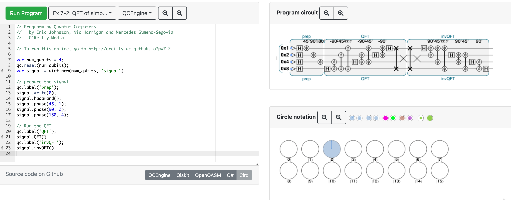

『動かして学ぶ量子コンピュータプログラミング』 (タコ本) のやっていき記録

このページは mdBook で作っています。ソースコードは以下にあります。
https://github.com/pn11/octo-book
1章 はじめに
- QPU の説明
- QPU simulator の QCEngine の使い方
- マウスホバーでその時点での状態が分かるの便利そう。
- QPU 命令のリストアップ
- シミュレータの限界
- 量子ビットが1つ増えるごとに必要なメモリが2倍になるため、現実的には手元では26個、世界最大でも51個。
- ハードウェア制限
- 現在世界最大のものは70量子ビット程度で誤り訂正を持たない (NISQ)。
- 本書ではハードウェアのことは意識せず、理想的な論理量子ビットを仮定し、もっと高レイヤーのみ考える。
- QPU と GPU はわりと特徴が共通している
2章 単一キュビット
2.2
- 円表示の説明
2.3
- QPU演算の説明
- HAD (アダマール) 演算は重ね合わせ状態を作る演算で重要
- 円表示より行列で計算したほうが分かりやすい cf. 1入力量子ゲート - EMANの量子力学
- WRITE -> HAD -> READ でランダムビット生成器を作れる -> https://oreilly-qc.github.io/?p=2-1
- ランダムビットを8個に増やせばランダムバイト -> https://oreilly-qc.github.io/?p=2-2
- HAD (アダマール) 演算は重ね合わせ状態を作る演算で重要
2.5
- QPU 演算の組み合わせの例
- NOT = HAD + PHASE(180) + HAD
- ROOT-of-NOT = HAD + PHASE(-90) + HAD
(なぜ90度ではなく-90度を定義としている？)
https://oreilly-qc.github.io/?p=2-3
2.6
- 暗号通信の例として量子スパイハンター
- 実際は暗号化はしていない。送ったメッセージが盗聴されているかどうかを検出する
- Web の例 https://oreilly-qc.github.io/?p=2-4 よりも本のコードの方が意図を汲みとりやすい
3章 多重キュビット
3.1
- 多重キュビットはブロッホ球では表わせない
- 円表示ではNキュビットを \(2^N\) 個の円で表せる
- 図3-2の下から上へは
\[ (\ket{0}_3+\ket{1}_3) ({1\over\sqrt{2}}\ket{0}_2+{1\over\sqrt{2}}\ket{1}_2) ({1\over\sqrt{2}}\ket{0}_1+{1\over\sqrt{2}}\ket{1}_1) \\ = {1\over 2}\ket{0}_3\ket{0}_2\ket{0}_1 + {1\over 2}\ket{0}_3\ket{0}_2\ket{1}_1 + \cdots \]
ただし、下添字はキュビットを表し、\( \ket{0}:=\ket{0}_3\ket{0}_2\ket{0}_1, \cdots, \ket{7}:=\ket{1}_3\ket{1}_2\ket{1}_1 \)
上から下へは難しそう (因数分解っぽい?)。 - https://oreilly-qc.github.io/?p=3-1
で、qc.reset(3)はレジスタを準備して、qint.new(1, 'qubit 1')でレジスタを qint に割りあてている。普通のプログラミングではアセンブラを書いたりしない限りレジスタのことを考えないが、少なくともこのシミュレータではそうなっている。 - もつれた多重キュビットの状態は各キュビットの組み合わせで表現できず、単一キュビットの演算からもつれた状態を生成することもできない
図3-3 は3キュビットの場合だが、2キュビットの場合以下のようになる。
\(\ket{0}+\ket{3}\) を2キュビットの組み合わせで書けるとすると、
\[ a,b,c,d \in \mathbb{C} \\ (a\ket{0}_2 + b\ket{1}_2) (c\ket{0}_1+d\ket{1}_1) \\ = ac\ket{0}_2\ket{0}_1 + ad\ket{0}_2\ket{1}_1 + bc\ket{1}_2\ket{0}_1 +bd\ket{1}_2\ket{1}_1 \\ = ac\ket{0} + ad\ket{1} + bc\ket{2} + bd\ket{3} \]
と表すことができることになる。これが \(\ket{0}+\ket{3}\) と等しいためには、
\(ac=bd=1\) かつ \(ad=bc=0\) が必要だが、これは矛盾する。(証明 by ふぇるみうむ氏)
3.2
- レジスタが16進数で書いてあるけど実質2進数なのややこしい (訳注ありがたい)
- なぜ0はじまりではないのか
3.3
- N番目のキュビットに対する単一キュビット演算 (NOT, PHASE, HAD)は、円表示ではN個離れた「演算対象ペア」の円に適用される
- READ の場合、「演算対象ペア」の左側を半径を2乗して足し上げると出力が0になる確率。右側が1
3.4
- キュビットが増えると円表示の円の数も増えるけど、パターンとして見ると意味があるかも？
3.5 CNOT
- アダマールしてから CNOT をすると量子もつれ状態を生成できる
- p. 49 の「これは意味のある結果です」は make sense の翻訳がおかしい？ (原書未確認)
3.6
- 節題がだいぶ怪レい...
- p.50 QNRG -> QRNG
- https://oreilly-qc.github.io/?p=3-2
3.7
- CPHASE の場合、制御キュビットとターゲットは可換
- なので演算の記号もそのように描く
- 制御キュビットが \(\ket{1}\} のときに作用するという条件と、PHASE演算は相対位相だけ気にするのでターゲットキュビットの \(\ket{1}\} にのみ作用するという条件が同じため
- Z=PHASE(180) が HAD と NOT で作れたように、 CZ=CPHASE(180) は HAD と CNOT で作れる
3.7.1 位相キックバック
何やってるのかよくわからん- Register 2が操作できるブーリアンだと思って、これが制御キュビットなので、 Register 2 の状態によって Register 1を制御できているとい動きになっている。
- Register 2 は操作の前後で変化しない
- https://oreilly-qc.github.io/?p=3-3
- register 分けるなら円表示も分けたほうが分かりやすい気がする
3.8 CCNOT (Toffoli Gate)
- CNOT にさらに condition が追加されただけなので特に難しくない
- IBM Quantum Challenge 2021 の第一問に出てきたやつ
3.9 SWAP and CSWAP
- CCNOT 3つで CSWAP を実装できる
- CSWAP を用いて2の乗算を実装できる？ (詳しくは5章、12章)
3.9.1 Swap Test
- READ を使わずに2つのキュビットが同じ状態かどうかを判定できる
- https://oreilly-qc.github.io/?p=3-4
- input1 と input2 の状態が一致していたら
output.read()の結果は必ず1になり、そうでない場合は状態の忠実度 (fidelity) に応じて0か1がランダムに得られる - input1 と input2 は任意のベクトルなので、 (\ket{0}) (\ket{1})( だけじゃなく、 (\textrm{input1}=\textrm{input2}=1\over\sqrt{2}\ket{0}+1\over\sqrt{2}\ket{1}) でもちゃんと output1 が1になる
3.10
- CNOT と他の演算を組み合わせて単一キュビット演算を多重キュビット演算にできることは分かったが、自分で思いつくのは難しそう
- https://oreilly-qc.github.io/?p=3-5
3.11
- https://oreilly-qc.github.io/?p=3-6
- このハンズオンは特に新しい内容は出てこないが、 PHASE 演算でもつれの割合を操作できることが確認できる
以下のように for を使って多数回試行できる (daiju 氏)
qc.reset(2);
var a = qint.new(1, 'a');
var b = qint.new(1, 'b');
var c = [0, 0, 0, 0];
for (var i =0; i < 1000; i++) {
qc.write(0);
a.had();
// now prob of a is 50%
b.had();
b.phase(45);
b.had();
// now prob of b is 15%
b.cnot(a);
// Now, you can read *either*
// qubit and get 50% prob.
// If the result is 0, then
// the prob of the *remaining*
// qubit is 15%, else it's 85%
var a_result = a.read();
var b_result = b.read();
c[a_result + b_result * 2] += 1;
}
// 00, 01, 10, 11 の各状態の頻度をプリント
qc.print(c + '\n')
4章 量子テレポーテーション
4.1
- https://oreilly-qc.github.io/?p=4-1 を IBM Q で実行すると量子テレポーテーションを行えてパイオニアになれる！
- IBM QX での実行結果の例 (Yorktown を選ぶと早く実行される模様。Manilla では全然始まらなかった。)
- 図4-1 で配線がやたらうねうねしているのはなぜ？
また、 0-4 や 1-3 などが直接つながっていないのはなぜ？ - ep は entangled pair と思われる
- p.71 の日本語がとても分かりにくい。4章全部を読んでから読むと意味が分かる。
- 1段落目の最後の方は、アリスが READ した Alice と ep の値を Ethernet などでボブに送り、 ボブはその情報を使って Bob が4つの状態のうちどれだったかを復元できる、ということを言っている。
- 2段落目は、古典的に情報を送っていてすごくないと思われるかもしれないが、 Alice から Bob に量子状態を送るのは古典的には実現できないのですごい、と言っている。補助的に送っている2個の古典ビットが持つ情報よりも多い情報を送ることができている。
4.2
-
ブラウザ上で円表示を2行でいい感じに表示するには円を拡大したりする。
-
4.2 では https://oreilly-qc.github.io/?p=4-1 の QCEngine のプログラムで
var bob_is_asleep = true;とした場合であることに注意。この場合、ボブが寝ているため、アリスからイーサネット経由で古典ビットを送ることはない (IBM QX が feed forward に対応していないためそれに合わせている)。そのため、recieve の部分で
NOTとPHASE(180)は必ず実行される。 -
p. 77 のステップ4で「HADまたはPHASE(180)」とあるのは、「NOTまたはPHASE(180)」の誤り。p.80 の「HADとPHASE(180)」も同様。
-
ステップ5 (verify) で、prep payload の逆演算を行うとシミュレータでは必ず bob=0 となる。実機ではエラーが起こる可能性がある。
4.3
- 本では成功率 87.8% となっているが、自分で実行した結果は上記の Yorktown 画像のようにもう少し低かった。
- また Melbourne で実行するとエラーは50%以上...!

4.4
- テレポーテーションが基本的なものということなので、上記の成功率 88% はかなり低いと感じる
4.5
-
ハエの絵をうまく表示するにはまず円表示の円の中身を大きくして(右端の緑の円を何回かクリックする)、円表示の canvas 要素やその親の div 要素の height を500に変えてやると良い。
それにはブラウザの開発者ツールを開いて、コンソール内で次を実行する。(もしくは、ブックマークレットに設定してもよい)document.getElementById("circle_div").style.height='500px'; document.getElementById("circle_canvas").height=500;ブックマークレットにする場合は、
javascript:document.getElementById("circle_div").style.height='500px';document.getElementById("circle_canvas").height=500;ブックマークレットについてはこの辺の記事を参照
ブックマークレットの仕組みと使い方 | ライフハッカー［日本版］ -
エラー率12%の場合のハエ
-
エラー率50%の場合のハエ

5章 量子算術演算と量子論理演算
5.1
- 復習
- CCNOT = Toffoli gate
- qubit はコピーできない
- READ 以外の基本的な QPU 演算は可逆 (WRITE は READ + NOT でできる -> 2.3.4)
- 演算が可逆なのはユニタリだから？
5.2
- 量子ニブル (qunible) を使った算術演算を考える
5.2.1
- increment と decriment https://oreilly-qc.github.io/?p=5-1
- これらは普通の整数と量子整数の足し算になっている
5.3
- 「複製不可能性に違反する」の説明は「可逆性の要件に違反する」の偽の命題を仮定していておかしい？ 演算がユニタリであることから可逆的であることが言えて、複製不可能性はそこから導かれるという方が自然？
- +演算子は可逆性と複製不可能性に反するので += 演算子を実装する
https://oreilly-qc.github.io/?p=5-2 - QCEngine で add が実装されているのはこのあたり -> QCEngine/qcengine_int.js at master · machinelevel/QCEngine
5.4
- 補数（complement）とは - IT用語辞典 e-Words
- 実は C++ で負の整数を2の補数で表すことが仕様で定められたのは C++20 ! (符号付き整数型が2の補数表現であることを規定 - cpprefjp C++日本語リファレンス)
5.5
- 乗算は可逆にするのが困難
- 可逆な演算の例: 二乗してから足す https://oreilly-qc.github.io/?p=5-3
b <- b*bは不可逆だが、a += b*bの逆演算はa -= b*bで、可逆- 図5-10 は、以下のように理解できる。
\(b = b_1 + 2b_2\) とおくと (\(b\)を2進数で表したときの1桁目を\(b_1\)、2桁目を\(b_2\))、
\[ b^2 = {b_1}^2 + 4{b_1}{b_2} + 4{b_2}^2 \\ = {b_1} + 4{b_1}{b_2} + 4{b_2} \]
(0と1は2乗しても変わらないため、\({b_1}^2 = b_1, {b_2}^2 = b_2 \) )
図5-10の最初の４つの演算は \(+=b_1\) を表す。次の4つは \(+=2b_1b_2\) を2回やっている (\(b_1b_2\)は\(b_1, b_2\)がそれぞれ0または1であることから\(b_1~\text{AND} b_2~\)と同じ)。最後の2つが\(+=4b_2\)に対応。
(ここまで 2021/07/3)
5.6
5.6.1
- https://oreilly-qc.github.io/?p=5-4
3より上か下かを判定するために、-3して符号のビットで判定している
5.6.2
- https://oreilly-qc.github.io/?p=5-5
- 位相に情報をエンコードするのに CPHASE や CZ を使っている
- 書籍中の JavaScript 中の
b.not(~1)のような部分が一見分かりにくい。まず~1は、1のビット演算の NOT、 つまり 32bit だったら一番下だけ0で、それ以外の31桁すべてが1になっている数を表す。なので、b.not(~1)はb.not(1...10)のようなイメージ。つまりレジスタ b に対して QPU の NOT 演算を、1つ目の qubit 以外全てに適用するという操作。
今の場合、bは二桁しかないので、~1は10と等価。
5.7
- abs の実装例はないようなので自分たちでやってみた。
-
-1 (0b111) にabsを適用する場合。
// Initialize var num_qubits = 4; qc.reset(num_qubits); var a = qint.new(3, 'a'); var b = qint.new(1, 'b'); // prepare qc.label('prepare'); a.write(0b111); b.write(0b0); qc.nop(); qc.label('XOR = CNOT'); qc.nop(); qc.nop(); qc.cnot(0x8, 0x4); qc.nop(); qc.nop(); qc.label('2の補数'); qc.cnot(0x1|0x2|0x4, 0x8); qc.cnot(0x4, 0x1|0x2|0x8); qc.cnot(0x2, 0x1|0x8); qc.cnot(0x1, 0x8);初期状態が \(\ket{a = -1 = \textrm{0b111},~b=0=\textrm{0b0}} = \ket{0111} = \ket{7} \) で、終状態が \(\ket{a = 1 = \textrm{0b001},~b=1=\textrm{0b1}} = \ket{1001} = \ket{9} \) となっている。
-
1と-1の重ね合わせにabsを適用する場合。
var num_qubits = 4; qc.reset(num_qubits); var a = qint.new(3, 'a'); var b = qint.new(1, 'b'); // prepare qc.label('prepare'); a.write(0); b.write(0); qc.nop(); qc.label('｜0〉+｜2〉'); qc.nop(); qc.had(0x2); qc.nop(); qc.label('subtract(1)'); a.subtract(1); qc.nop(); qc.label('abs'); qc.cnot(0x8, 0x4); qc.cnot(0x1|0x2|0x4, 0x8); qc.cnot(0x4, 0x1|0x2|0x8); qc.cnot(0x2, 0x1|0x8); qc.cnot(0x1, 0x8);はじめに \(\ket{0}\) と \(\ket{2}\) の重ね合わせを作ってから \(-1\) すると \(\ket{-1} = \ket{7}\) と \(\ket{1}\) の重ね合わせになる。これに abs を適用すると \(\ket{1}=\ket{0001}\) と \(\ket{9}=\ket{1001}\) の重ね合わせになる。このとき、 \(a\) に対応する部分はどちらの状態でも \(001\) で、絶対値は等しい。 (-1と1の重ね合わせを作る方法を思いついたふぇるみうむ氏かしこい！)

-
(ここまで 2021/07/25)
5.8
- スクラッチキュビットは演算を可逆にするために導入したが、もつれやすい
- もつれを戻すために演算を巻き戻すことをアンコンピュートと呼ぶ
- アンコンピュートする前に値を足したり XOR (CNOT) したり、位相情報に変換するなどして計算結果を保存する
5.9
- NAND ゲートがあると、 AND, OR, NOT, XOR などが作れる
- CNOT ゲート (トフォリゲート) で NAND と同じものを作れる https://oreilly-qc.github.io/?p=5-6
- 他にも NOT, AND, NAND, XOR, OR, NOR を作ったものが図5-25
5.10
この章では重ね合わせ状態で計算する方法を見て来たが、次の章では結果を読み出す方法 (振幅増幅) を見て行く。
6章 振幅増幅
6.1
- 振幅増幅 (amplitude apmlification) は位相差を振幅の差に変換することで READ しやすくする
- https://oreilly-qc.github.io/?p=6-1
- mirror サブルーチン = Grover アルゴリズム
6.2, 6.3
- https://oreilly-qc.github.io/?p=6-2
- 振幅増幅を繰り返し行うと結果は周期的になる
- 最適な反復回数は \(N_{AA} = \lfloor { \pi \sqrt{2^n} \over 4 } \rfloor \) になるとのことだが、これは解析的に出るのか、経験式なのかよく分からない。
- Daiju 氏による補足ノート hinohi/quantum-note/6-amplitude-amplification.ipynb
(ここまで 2021/08/07)
6.4
- https://oreilly-qc.github.io/?p=6-2
- 位相差がある成分が複数の場合の増幅も考えることができる
- 相対位相なので、半数の状態が反転しているような場合は状態が変わらず、増幅できない
- 複数の場合の 最適な反復回数は \(N_{AA} = \lfloor { {\pi \over 4} {\sqrt{2^n} \over m} } \rfloor \)
6.5
- 振幅増幅の応用例
- 振幅増幅と量子フーリエ変換を組み合わせて量子和推定 (quantum sum estimation) (11章) に使える
- 振幅増幅は boolean satisfiability (SAT) 問題の高速化に使える。ここの計算量の記述は日本語が怪しいので調べたほうがよさそう
6.6
- 「際」→「差異」
- 振幅増幅を感覚的に解説すると、重心を求めてそこからの距離で増幅するような感じ。たしかにグローバーにはアダマールが入っているので、平均しているような感じがある？(適当)
(ここまで 2021/08/22)
7章 QFT:量子フーリエ変換
7.1
7.2
- ふぇるみうむ氏おすすめのフーリエ変換の資料 → やる夫で学ぶディジタル信号処理
7.3
- https://oreilly-qc.github.io/?p=7-2
- QFT は可逆なので in-place で実行できる。逆変換は
invQFTでできた (7.5.1.2で出てきた)。
 - https://oreilly-qc.github.io/?p=7-3 は 7-2 と一緒。
7.4
- 8バイト = 64ビット = 倍精度浮動小数点数 だけど、普通ビットで表すことが多い気がするので一瞬戸惑った
- 入力状態が実数だと mirror image が現れる
- https://oreilly-qc.github.io/?p=7-5 は 4.5 に書いたブックマークレットを使うときれいに見える。
7.5
7.5.1
- FFT の計算量は \(\mathcal{O}(N \log N) \) (\(N\)は標本数) なので、\(N = 2 ^n\) を代入すると \(\mathcal{O}(n2^n) \)
- QFT の場合は \(\mathcal{O}(m^2) \) から逆算すると恐らく計算量は \(\mathcal{O}((\log N)^2) \)？
- QFT の場合、周波数分布を得るには READ を何度も行わないといけなくて、その回数のオーダーは \(\mathcal{O}(2^m) \) とかになりそう？
7.5.1.1
- 一般に入力信号を QPU レジスタに載せるのは簡単ではない
- 計算量が必要な場合もあるので、 QFT による高速化がキャンセルしてしまう可能性もある
- QFT の結果にアクセスするのが困難
- 結果の一部だけ見るだけで良いアプリケーションとかになら使える
- ショアの因数分解アルゴリズムでは QFT が使われている
7.5.1.2
- 逆QFT https://oreilly-qc.github.io/?p=7-6
- レジスタ準備するときにも使えそう
- 周波数変調 https://oreilly-qc.github.io/?p=7-7
- QFT → 値を足す → invQFT で周波数変調できる
(ここまで 2021/09/04)